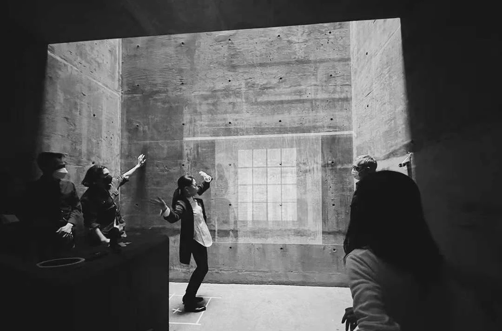
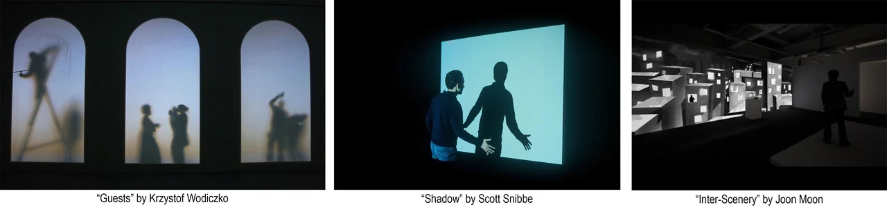
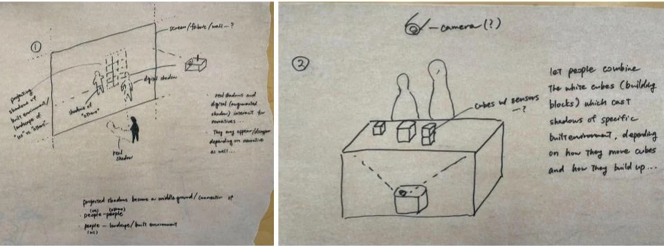
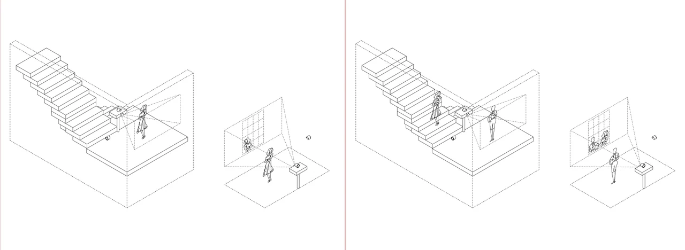
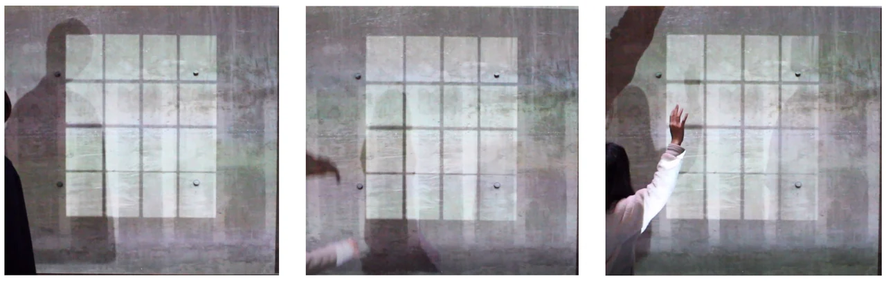
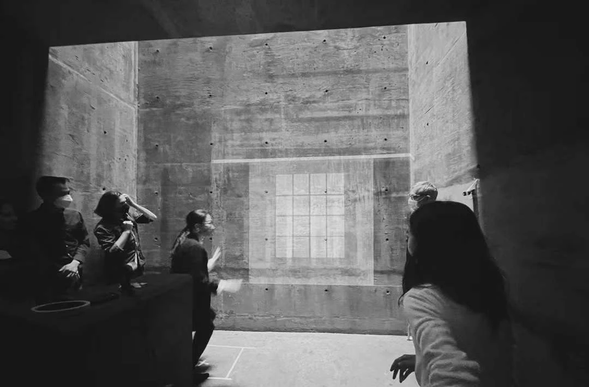
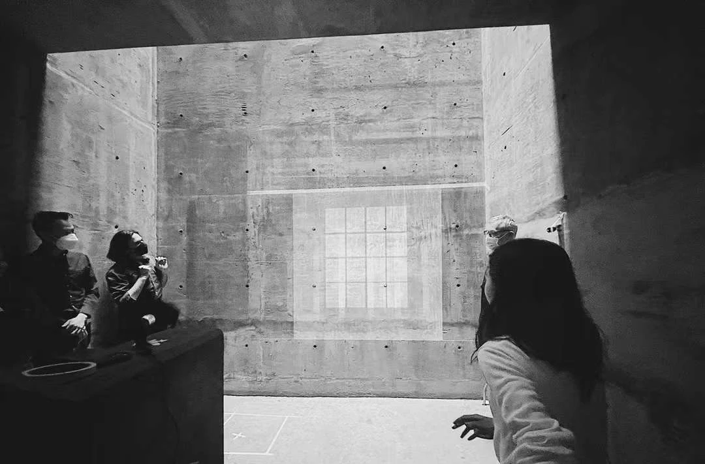
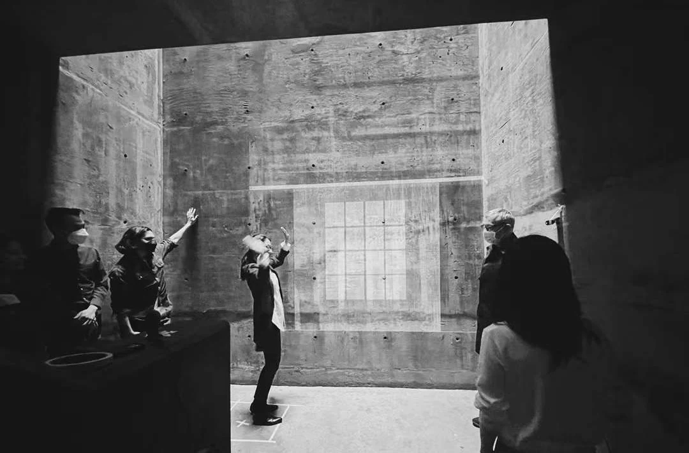

INT–η: Bridging Shadows
Instructors: Allen Sayegh, Humbi SongCollaborative Project (This project was developed through a fully collaborative two-person workflow. All conceptual and technical decisions were made jointly through continuous dialogue, iteration, and testing.)
Teammate: Maya Adachi
Tools & Technologies: TouchDesigner, real-time video capture, projector mapping, dual-camera system, temporal-delay algorithms
Introduction
Bridging Shadows constructs an immersive environment where shadows become temporal bridges—linking the present self, the past self, and the traces of others. Within a narrow, windowless space, a projected window silhouette becomes the only “connection” to the outside world, framing an ambiguous boundary between inside and outside, self and other, past and present. Through layered projections and time-shifted shadows, the installation reveals how identity is shaped, echoed, and destabilized across different temporal dimensions.

Concept
The project explores how shadows—normally immediate and indexical—can be displaced, delayed, and recomposed to produce new temporal experiences. Inspired by precedents in augmented shadow work and critical explorations of mediated presence, the installation stages an encounter between three temporal conditions:
-
The real-time shadow of the visitor in the present moment.
-
The shadow of a previous visitor, recorded earlier and projected behind the window frame.
-
The visitor’s own shadow from the past, captured one minute prior and reintroduced into the space as an “other.”
By choreographing these temporal layers, the installation disrupts the assumption that a shadow is a faithful, immediate mirror of reality. Instead, shadows become narrative fragments—carrying echoes of strangers, remnants of earlier selves, and moments where the boundary between “me” and “not me” dissolves.
The projected window silhouette anchors these interactions. It becomes a symbolic threshold: a portal between different temporalities and a visual metaphor for isolation, longing, and the blurred distinction between personal memory and collective presence. Ultimately, the work invites viewers to question what is real, who the “other” is, and how identity is continuously reframed by time.


System
The installation operates through a multi-camera, multi-projection system designed to reconstruct shadows with different temporal offsets:
-
Real-time Shadow Capture
This shadow is projected in front of the window frame, placing the viewer “inside the room.”
- Delayed Shadow Playback (Past Self)
After a 60-second delay, this recording is re-projected as a second shadow—appearing as a ghost of the visitor’s past self.
- Shadow of a Previous Visitor (Past Others)
These shadows appear behind the window frame, representing someone who has occupied the space before you—an “intruder,” a “memory,” or simply another life condition parallel to your own.
- Temporal Blending
The effect is subtle yet uncanny: your present self encounters your past self and the past of another person, all projected within the same architectural frame.


Mechanism
Projector Installation
Position the projector either on the ground or at a height that prevents the visitor’s real shadow from interfering with the projected visuals. The projector casts the window silhouette and all composite shadow layers onto the wall.
Dual-Camera System
-
Camera 1 (Live Shadow Capture):
-
Camera 2 (Delayed Shadow Capture):
Processing Unit
A laptop running TouchDesigner (or Processing, depending on complexity) handles real-time compositing, temporal delay, window-frame mapping, and projection output. It synchronizes the live shadow, delayed shadow, and stored shadow from previous visitors into a single layered projection.



Reflection
Bridging Shadows reframes shadow as more than a visual effect; it becomes a temporal and relational medium. By allowing visitors to encounter themselves and others across different moments in time, the work challenges the assumption that identity is singular and continuous. Instead, it proposes that identity is always in negotiation—between memory and immediacy, between self and other, between what is seen and what is recorded.